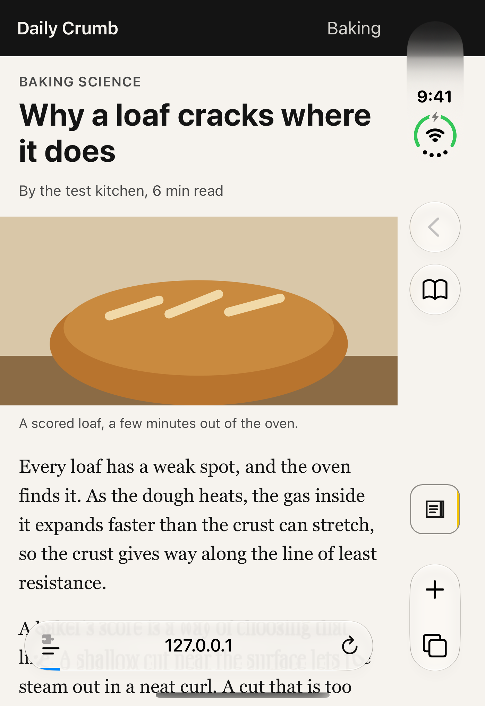
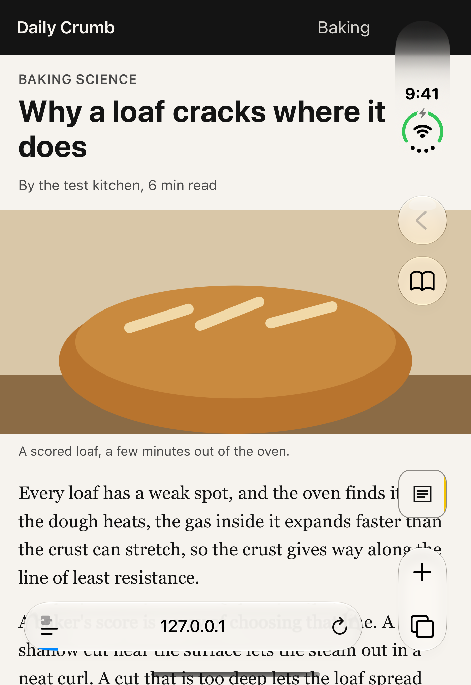
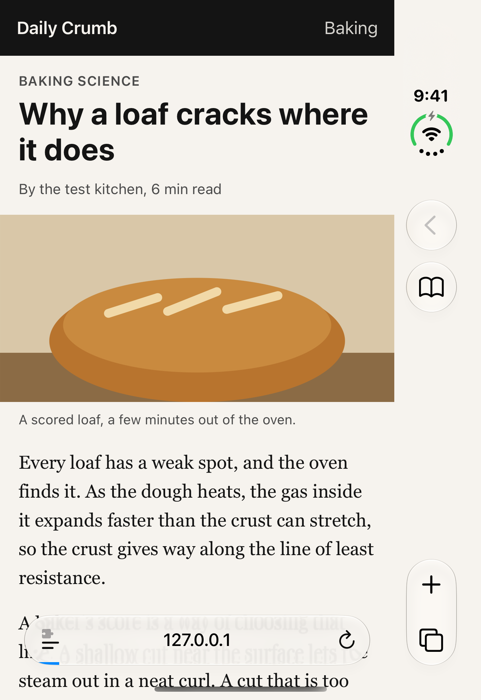
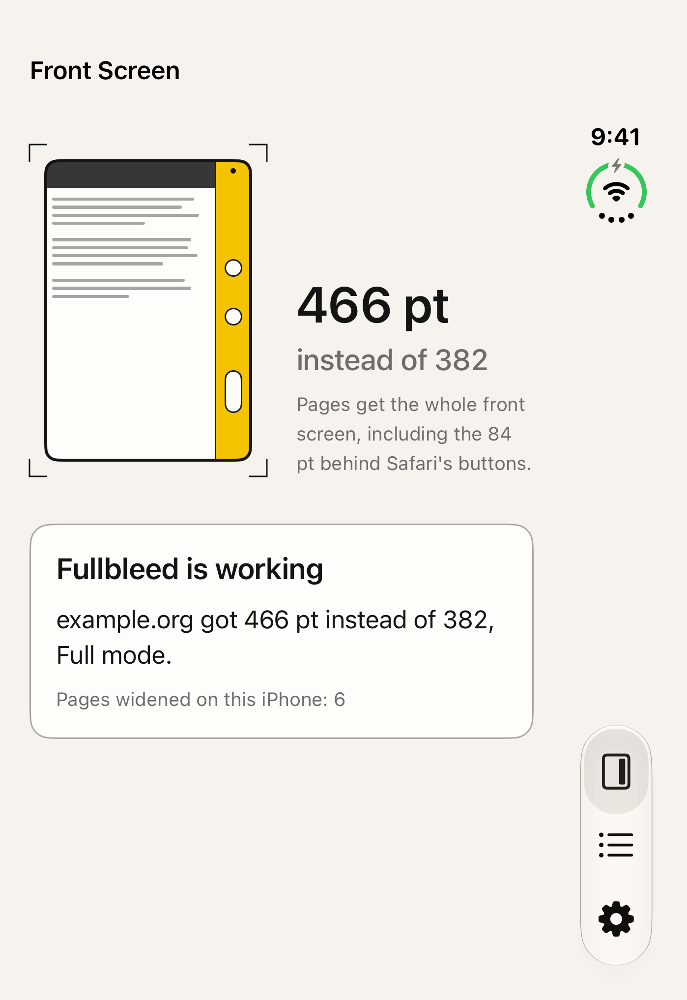
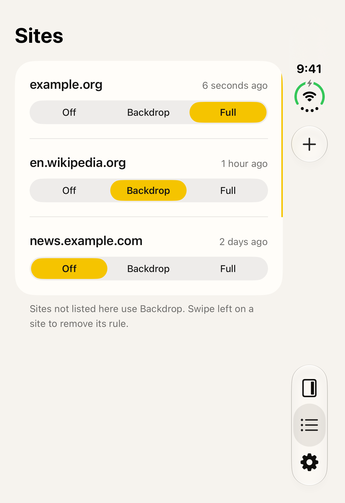
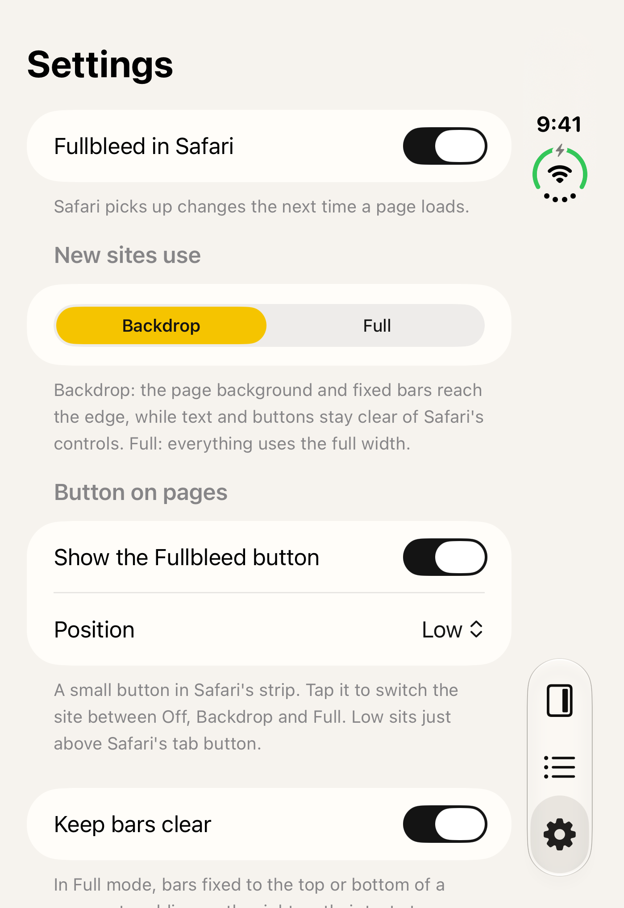
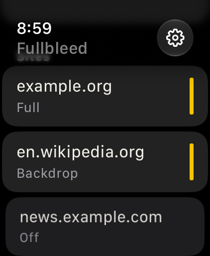
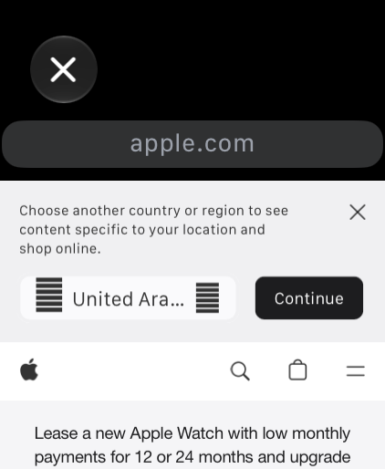
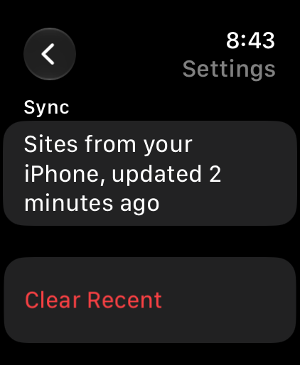

Fullbleed
Wider pages on iPhone Duo · updated 1 Nov 2026
What is new
Fullbleed is a free Safari Web Extension with a container app. On the iPhone Duo's front screen, Safari keeps its buttons in an 84 pt strip on the right and lays pages out in the remaining 382 pt of the 466 pt display. Fullbleed lets a page use the full width, one site at a time, with Off, Backdrop and Full modes. Measured on the Duo simulator: 382 pt before, 466 pt after. It only acts on the front screen. An Apple Watch app opens any site in the watch's web view, lists the sites synced from the iPhone with their modes, and hands a page off to the iPhone. Version 1.0 is in App Review now.
Facts
- Version
- 1.0 (build 2026110102), built with Xcode 27.1
- Platforms
- iPhone, iOS 27.1 (acts on the iPhone Duo front screen), and Apple Watch, watchOS 27
- Languages
- English (US, UK, Australia, Canada), Spanish (Mexico and Spain), German, French, Italian, Japanese, Korean, Portuguese (Brazil), Russian, Simplified Chinese, Dutch
- Price
- Free, no in-app purchases
- Privacy
- Everything stays on your own devices: the iPhone sends your site list only to your paired Apple Watch. No accounts, no analytics, no servers of ours. Privacy policy
- Accessibility
- Accessibility labels on the diagram, site rows and the in-page button, Dynamic Type text styles, Reduce Motion respected
- Window
- 24 Nov to 14 Dec 2026
- Developer
- Hemal Modi, one developer
Screens
Simulator captures from the iPhone Duo front screen (closed pose), 1398 x 2034 px, and from the Apple Watch Ultra simulator, of the screens described in the nomination. No marketing frames.









Why now
- WebKit Features for Safari 27.1 WebKit blog, 23 Oct 2026
- Apple Wants to Fix Safari's Cramped Layout on iPhone Duo MacRumors, 24 Oct 2026